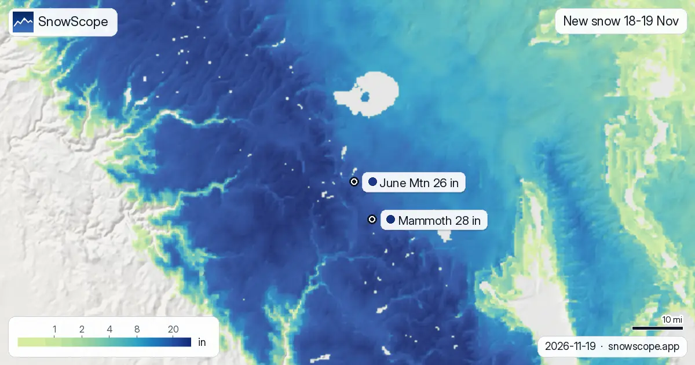

Mammoth Mountain gets over 2 feet of snow: how the 19 November storm compares with 46 winters
The Eastern Sierra woke up to a real winter storm. Our snow maps give Mammoth Mountain about 28 inches (70 cm) of new snow on the upper mountain over Wednesday and Thursday, 18 and 19 November 2026, and June Mountain next door about 26 inches (66 cm). The snow on the ground at Mammoth's upper slopes went from 9 inches on Tuesday to about 30 inches (2.5 feet) by Thursday. Here is what is driving it, how unusual it is for the date, and what it means for a weekend trip.
See the live snow forecast for Mammoth Mountain in the SnowScope appSnow depth, powder alerts and the 3D map, free.
How much snow fell, and how much is still coming
Almost all of it comes in one hit. Wednesday brought only 2 inches at Mammoth's upper slopes; Thursday, 19 November, is the big day with about 26 inches (65 cm) on our map, and about 24 inches (60 cm) at June Mountain. Friday adds about 3 inches before the storm clears, and the weekend looks dry at both resorts.
The National Weather Service has a Winter Storm Warning for Mono County until 4 AM Friday, with an additional 15 to 30 inches west of US-395, where both ski areas sit, 2 to 8 inches along the highway itself and up to 4 inches east of it. Ridgetop gusts can reach 90 mph. Further south, the warning for the eastern slopes of Inyo County calls for 18 to 36 inches between 8,000 and 9,500 ft. The office in Las Vegas noted that gauges in the Eastern Sierra had already picked up 10 to 15 inches in just 12 hours by early Thursday.

The weather behind it, in plain words
This is an atmospheric river: a long, narrow band of very moist air coming in from the Pacific. The National Weather Service office in Salt Lake City described it as a landfalling atmospheric river aimed at the central Sierra, attached to a large low-pressure system that is now opening into a trough and moving inland. When that moist air hits the Sierra crest it is forced up thousands of feet, cools, and drops its water as heavy snow. Forecasters call this lift by the mountains orographic lift, and it is why the crest gets two or three times what the valleys get.
Mammoth sits just east of the crest, so it usually gets less than the western slope. In this storm the southwest winds are strong enough to carry the snow over the top, which is why the warning gives the heaviest totals west of US-395 and much less to the east. Behind the storm a cold front sweeps through on Thursday, bringing colder, showery air and dropping the snow level, before high pressure gives a brief dry and very cold spell from Friday afternoon.
How this compares with other winters
A storm this size in November is not a record at Mammoth, but it is a very good start. At mid-mountain, about 9,540 ft, there are about 22 inches (57 cm) on the ground on 19 November. In a usual winter there are only about 7 inches on this date, so this is about 3.3 times normal. Looking back at the same date in each of the past 46 winters, 12 were deeper. The deepest 19 November since 1980-81 was 1982-83, with about 53 inches, followed by 1981-82 with 45 inches and 2004-05 with 43 inches.
June Mountain stands out a little more: about 22 inches at 8,850 ft, almost 5 times the usual 4 inches, and only 4 of the past 46 winters were deeper on this date. It is also a clear change from the last few seasons. On this date in 2023-24 Mammoth's mid-mountain had about 8 inches and in 2024-25 just 3 inches, although last winter, 2025-26, was also a strong start with 26 inches.
What it means if you want to ski it
The best snow will be on the upper mountain at Mammoth, where the depth is now about 30 inches, roughly 2.5 feet. Lower runs at the 8,060 ft base hold less, and early-season snow always hides rocks and stumps, so stay on open, groomed terrain until patrol opens more. Friday is the stormy tail end; Saturday 21 and Sunday 22 November look dry and cold, the classic day-after-storm window.
Driving is the real hazard on Thursday and Friday morning. Expect chains or four-wheel drive on US-395 and the Mammoth Lakes roads, very strong winds and blowing snow on exposed stretches, and check Caltrans before leaving. Outside the ski area boundary, the new snow is sitting on a thin, weak early-season base: leave the backcountry alone until the avalanche center has had a few days to assess it.
Plan your trip for the clear days after the storm
Our trip planner ranks western resorts by snow, ski pass, places to stay and food for your own dates and budget. We have set it to the first dry weekend after the storm, Saturday 21 to Monday 23 November, two nights, with Mammoth in the list; change the dates or the budget and it re-plans the trip.
More maps (external sites)
References and credits
- National Weather Service: active winter storm warnings and advisories www.weather.gov/
- USDA NRCS SNOTEL: measured snow depth and snow water www.nrcs.usda.gov/resources/data-and-reports/snow-and-climate-monitoring-predictive-maps
- Avalanche.org: US avalanche forecasts avalanche.org/
About these numbers
New snow and snow on the ground at the resorts: SnowScope snow maps for 18-19 November 2026, upper slopes unless a height is given; Friday to Sunday are forecast. Past winters: the same date in each of the 46 winters since 1980-81, at the height given. Measured gauges: USDA NRCS SNOTEL, morning readings. Warnings and forecast discussions: National Weather Service, 19 November 2026.
Cite this report
For research, teaching or the press: the numbers and charts are free to reuse under CC BY 4.0 with this citation.
SnowScope (2026), Mammoth Mountain gets over 2 feet of snow: how the 19 November storm compares with 46 winters, https://snowscope.app/blog/en/2026/11/mammoth-mountain-2-feet-of-snow-storm-19-november-2026.html, accessed 2026-11-20
SnowScope (Atlas Labs). (2026, November 20). Mammoth Mountain gets over 2 feet of snow: how the 19 November storm compares with 46 winters. SnowScope snow reports. https://snowscope.app/blog/en/2026/11/mammoth-mountain-2-feet-of-snow-storm-19-november-2026.html
BibTeX
@misc{snowscope2026mammothmountain2feetofsn,
author = {{SnowScope (Atlas Labs)}},
title = {Mammoth Mountain gets over 2 feet of snow: how the 19 November storm compares with 46 winters},
year = {2026},
month = nov,
howpublished = {\url{https://snowscope.app/blog/en/2026/11/mammoth-mountain-2-feet-of-snow-storm-19-november-2026.html}},
note = {Published 2026-11-20 00:09 UTC; accessed 2026-11-20}
}· CC BY 4.0 · Methods, data and tools →
Follow Mammoth Mountain
Free: a message when fresh snow is coming, and the forecast every morning.
More snow reports

Vail in numbers: a usual peak of about 64 in (162 cm) at mid-mountain over 46 past winters, March the deepest month, plus terrain, access and safety.

Fresh snow across the US West has built depths well above normal. At Palisades Tahoe Alpine Meadows, upper slopes hold 75 cm (measured 2026-11-18), compared to 10 cm typical for mid-November.

Steamboat, Colorado, for families: what works for toddlers, school-age kids, teens and parents, with the snow of 46 past winters at three heights.